Query Tool¶
The Query Tool is a powerful, feature-rich environment that allows you to execute arbitrary SQL commands and review the result set. You can access the Query Tool via the Query Tool menu option on the Tools menu, or through the context menu of select nodes of the Browser tree control. The Query Tool allows you to:
Issue ad-hoc SQL queries.
Execute arbitrary SQL commands.
Edit the result set of a SELECT query if it is updatable.
Displays current connection and transaction status as configured by the user.
Save the data displayed in the output panel to a CSV file.
Review the execution plan of a SQL statement in either a text, a graphical format or a table format (similar to https://explain.depesz.com).
View analytical information about a SQL statement.
You can open multiple copies of the Query tool in individual tabs simultaneously. To close a copy of the Query tool, click the X in the upper-right hand corner of the tab bar.
The Query Tool features two panels:
The upper panel displays the SQL Editor. You can use the panel to enter, edit, or execute a query. It also shows the History tab which can be used to view the queries that have been executed in the session, and a Scratch Pad which can be used to hold text snippets during editing. If the Scratch Pad is closed, it can be re-opened (or additional ones opened) by right-clicking in the SQL Editor and other panels and adding a new panel.
The lower panel displays the Data Output panel. The tabbed panel displays the result set returned by a query, information about a query’s execution plan, server messages related to the query’s execution and any asynchronous notifications received from the server.
Toolbar¶
The toolbar is described in the following subsections.
The SQL Editor Panel¶
The SQL editor panel is a workspace where you can manually provide a query, copy a query from another source, or read a query from a file. The SQL editor features syntax coloring and autocompletion.
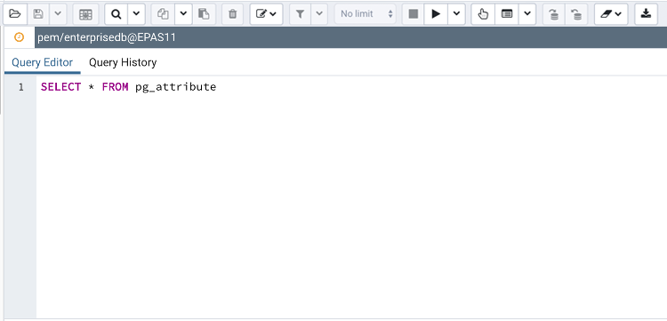To use autocomplete, begin typing your query; when you would like the Query editor to suggest object names or commands that might be next in your query, press the Control+Space key combination. For example, type “*SELECT * FROM* ” (without quotes, but with a trailing space), and then press the Control+Space key combination to select from a popup menu of autocomplete options.
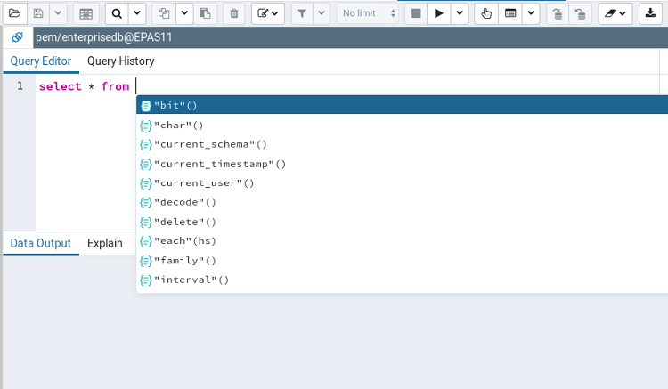After entering a query, select the Execute/Refresh icon from the toolbar. The complete contents of the SQL editor panel will be sent to the database server for execution. To execute only a section of the code that is displayed in the SQL editor, highlight the text that you want the server to execute, and click the Execute/Refresh icon.
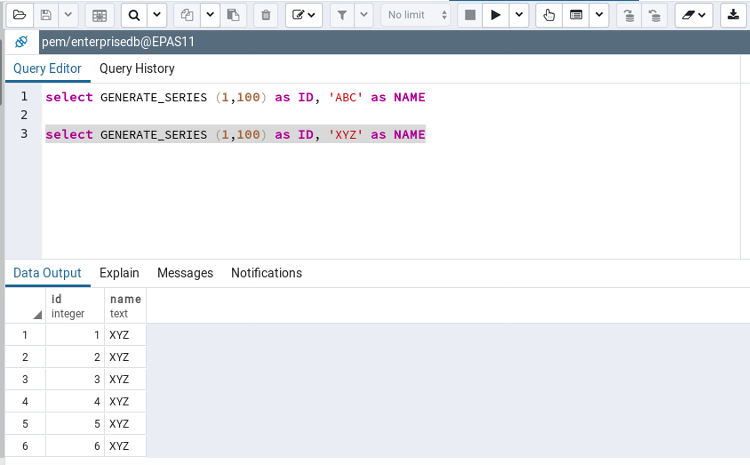The message returned by the server when a command executes is displayed on the Messages tab. If the command is successful, the Messages tab displays execution details.
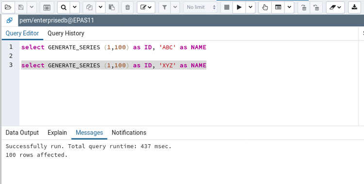Options on the Edit menu offer functionality that helps with code formatting and commenting:
The auto-indent feature will automatically indent text to the same depth as the previous line when you press the Return key.
Block indent text by selecting two or more lines and pressing the Tab key.
Implement or remove SQL style or toggle C style comment notation within your code.
You can also drag and drop certain objects from the treeview which can save time in typing long object names. Text containing the object name will be fully qualified with schema. Double quotes will be added if required. For functions and procedures, the function name along with parameter names will be pasted in the Query Tool.
The Data Output Panel¶
The Data Output panel displays data and statistics generated by the most recently executed query.
The Data Output tab displays the result set of the query in a table format. You can:
Select and copy from the displayed result set.
Use the Execute/Refresh options to retrieve query execution information and set query execution options.
Use the Download as CSV icon to download the content of the Data Output tab as a comma-delimited file.
Edit the data in the result set of a SELECT query if it is updatable.
A result set is updatable if:
All columns are either selected directly from a single table, or are not table columns at all (e.g. concatenation of 2 columns). Only columns that are selected directly from the table are editable, other columns are read-only.
All the primary key columns or OIDs of the table are selected in the result set.
Any columns that are renamed or selected more than once are also read-only.
Editable and read-only columns are identified using pencil and lock icons (respectively) in the column headers.
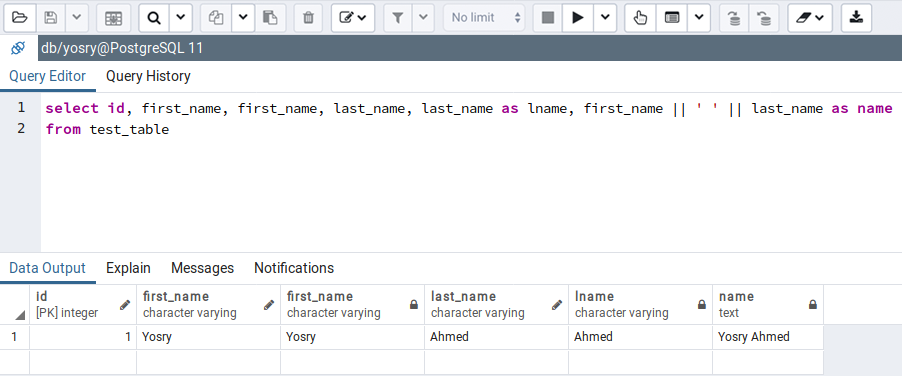The psycopg2 driver version should be equal to or above 2.8 for updatable query result sets to work.
An updatable result set is identical to the Data Grid in View/Edit Data mode, and can be modified in the same way.
If Auto-commit is off, the data changes are made as part of the ongoing transaction, if no transaction is ongoing a new one is initiated. The data changes are not committed to the database unless the transaction is committed.
If any errors occur during saving (for example, trying to save NULL into a column with NOT NULL constraint) the data changes are rolled back to an automatically created SAVEPOINT to ensure any previously executed queries in the ongoing transaction are not rolled back.
All rowsets from previous queries or commands that are displayed in the Data Output panel will be discarded when you invoke another query; open another Query Tool tab to keep your previous results available.
Explain Panel¶
To generate the Explain or Explain Analyze plan of a query, click on Explain or Explain Analyze button in the toolbar.
More options related to Explain and Explain Analyze can be selected from the drop down on the right side of Explain Analyze button in the toolbar.
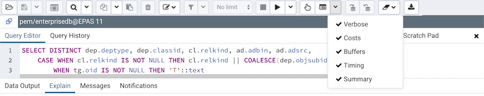Please note that pgAdmin generates the Explain [Analyze] plan in JSON format.
On successful generation of Explain plan, it will create three tabs/panels under the Explain panel.
Graphical
Please note that EXPLAIN VERBOSE cannot be displayed graphically. Hover over an icon on the Graphical tab to review information about that item; a popup window will display information about the selected object. For information on JIT statistics, triggers and a summary, hover over the icon on top-right corner; a similar popup window will be displayed when appropriate.
Use the download button on top left corner of the Explain canvas to download the plan as an SVG file.
Note: Download as SVG is not supported on Internet Explorer.
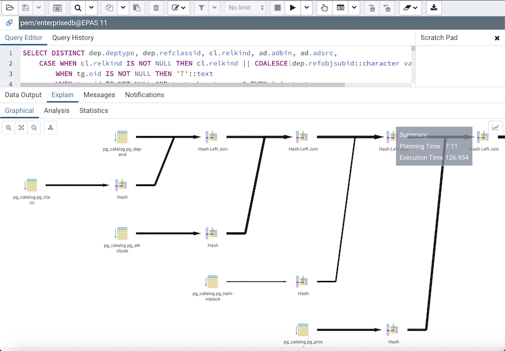Note that the query plan that accompanies the Explain analyze is available on the Data Output tab.
Table
Table tab shows the plan details in table format, it generates table format similar to explain.depsez.com. Each row of the table represent the data for a Explain Plan Node. It may contain the node information, exclusive timing, inclusive timing, actual vs planned rows differences, actual rows, planned rows, loops.
background color of the exclusive, inclusive, and Rows X columns may vary based on the difference between actual vs planned.
If percentage of the exclusive/inclusive timings of the total query time is: > 90 - Red color > 50 - Orange (between red and yellow) color > 10 - Yellow color
If planner mis-estimated number of rows (actual vs planned) by 10 times - Yellow color 100 times - Orange (between Red and Yellow) color 1000 times - Red color
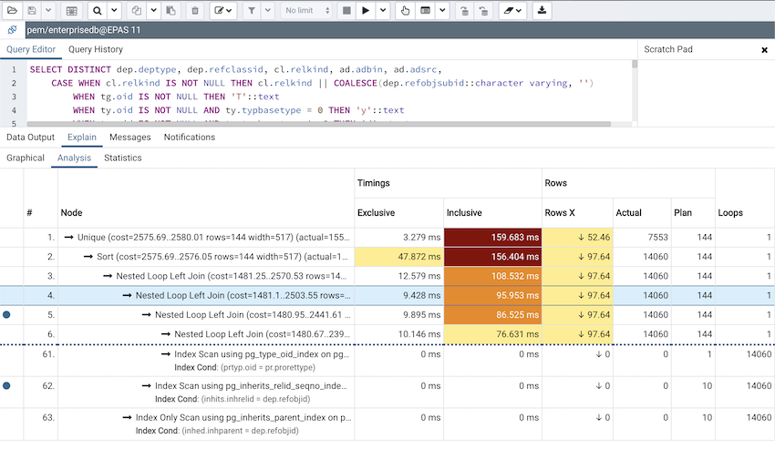Statistics
Statistics tab shows two tables: 1. Statistics per Plan Node Type 2. Statistics per Table
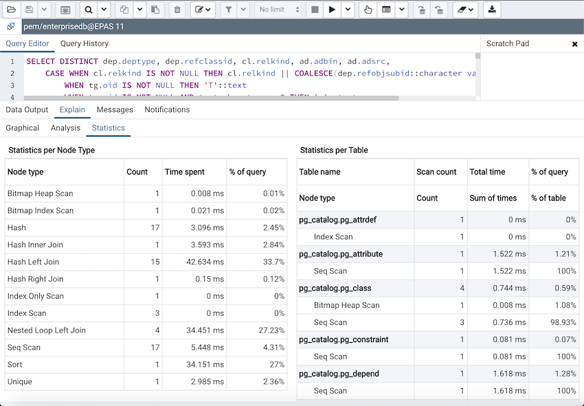Messages Panel¶
Use the Messages tab to view information about the most recently executed query:
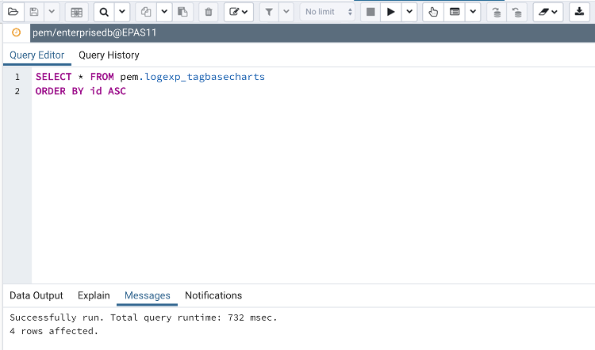If the server returns an error, the error message will be displayed on the Messages tab, and the syntax that caused the error will be underlined in the SQL editor. If a query succeeds, the Messages tab displays how long the query took to complete and how many rows were retrieved:
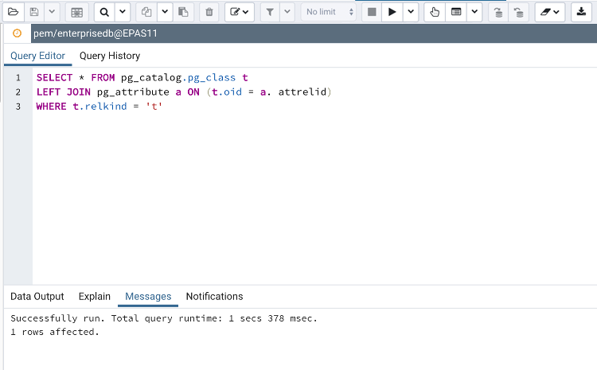Query History Panel¶
Use the Query History tab to review activity for the current session:
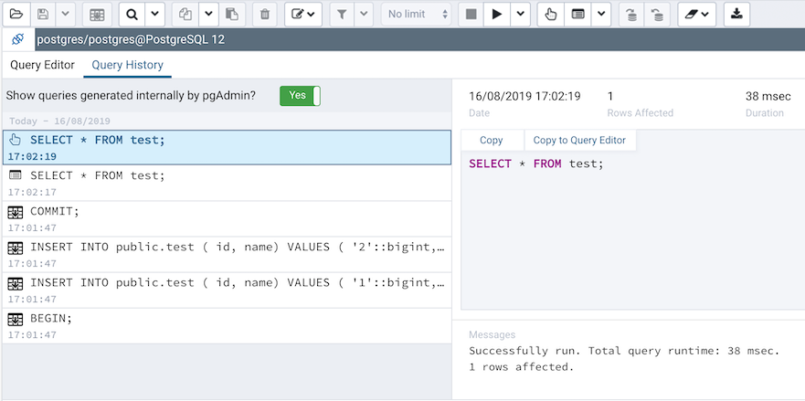The Query History tab displays information about recent commands:
The date and time that a query was invoked.
The text of the query.
The number of rows returned by the query.
The amount of time it took the server to process the query and return a result set.
Messages returned by the server (not noted on the Messages tab).
The source of the query (indicated by icons corresponding to the toolbar).
You can show or hide the queries generated internally by pgAdmin (during ‘View/Edit Data’ or ‘Save Data’ operations).
To erase the content of the Query History tab, select Clear history from the Clear drop-down menu.
Query History is maintained across sessions for each database on a per-user basis when running in Query Tool mode. In View/Edit Data mode, history is not retained. By default, the last 20 queries are stored for each database. This can be adjusted in config_local.py by overriding the MAX_QUERY_HIST_STORED value. See the Deployment section for more information.
Connection Status¶
Use the Connection status feature to view the current connection and transaction status by clicking on the status icon in the Query Tool:
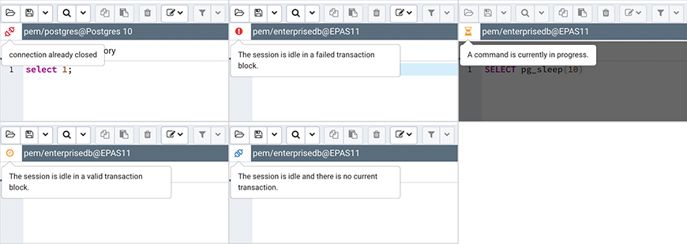